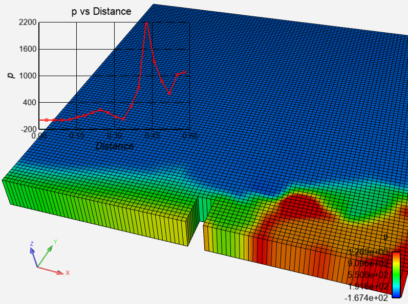
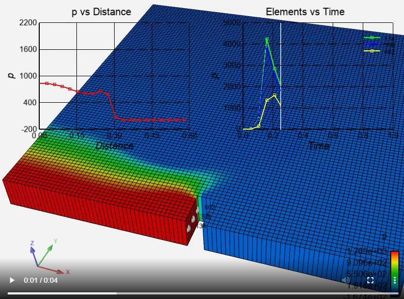

Note
Go to the end to download the full example code
Queries#
A query is basically a collection of x,y values. In addition to the raw values, each point is potentially a location in 3D space and a notion of “gaps” between values. In most cases, a query is drawn as a line on an EnSight plotter object. It can also be drawn as points and, using the “gaps”, as a collection of independent line groups.
The X and Y values can be sampled variable values and the ‘X’ value can be time or a distance along the line tool or a 1D part. This example makes time and line tool queries, and results are displayed on plotter objects. The query values can be manipulated with tools like NumPy.
Start an EnSight session#
Launch and connect to an instance of EnSight. This example uses a local EnSight installation.
from ansys.pyensight.core import LocalLauncher
import numpy as np
session = LocalLauncher().start()
Load the data#
This code uses a remote session to load a simple time-varying dataset of
waterflow over a break. It loads the data and displays the p variable
and element lines on the 3D part.
session.load_example("waterbreak.ens")
# Get the core part and variable objects
var = session.ensight.objs.core.VARIABLES["p"][0]
part = session.ensight.objs.core.PARTS["default_region"][0]
# Isolate the 3D part "default_region" and display it at
# solution time 0.7, coloring it by the 'p' variable.
session.ensight.objs.core.PARTS.set_attr("VISIBLE", False)
part.VISIBLE = True
part.ELTREPRESENTATION = session.ensight.objs.enums.BORD_FULL
part.COLORBYPALETTE = var
session.ensight.objs.core.SOLUTIONTIME = 0.7
session.ensight.objs.core.HIDDENLINE_USE_RGB = True
session.ensight.objs.core.HIDDENLINE = True
# Rotate the view a bit
session.ensight.view_transf.rotate(-66.5934067, 1.71428561, 0)
session.ensight.view_transf.rotate(18.0219765, -31.6363659, 0)
session.ensight.view_transf.rotate(-4.83516455, 9.5064888, 0)
session.ensight.view_transf.zoom(0.740957975)
session.ensight.view_transf.zoom(0.792766333)
session.ensight.view_transf.translate(0.0719177574, 0.0678303316, 0)
session.ensight.view_transf.rotate(4.83516455, 3.42857122, 0)
# Display it
session.show("image", width=800, height=600)
Create a query using the line tool#
Create a “Pressure vs Distance” query by sampling a line segment using
the line_loc
method to set the endpoints. This is a “generated” query that samples the
selected variable on the selected part at 20 points over the length of the
line segment.
session.ensight.part.select_begin(part.PARTNUMBER)
session.ensight.query_ent_var.begin()
session.ensight.query_ent_var.description("Pressure vs Distance")
session.ensight.query_ent_var.query_type("generated")
session.ensight.query_ent_var.number_of_sample_pts(20)
session.ensight.query_ent_var.constrain("line_tool")
session.ensight.query_ent_var.line_loc(1, 0.00, 0.075, 0.0)
session.ensight.query_ent_var.line_loc(2, 0.58, 0.075, 0.0)
session.ensight.query_ent_var.distance("arc_length")
session.ensight.query_ent_var.variable_1(var.DESCRIPTION)
session.ensight.query_ent_var.generate_over("distance")
session.ensight.query_ent_var.variable_2("DISTANCE")
session.ensight.query_ent_var.end()
session.ensight.query_ent_var.query()
# This is an interesting trick. The above code uses the
# 'native' command bindings. We would like to be able to
# use the query object. EnSight object 'values' are monotonically
# increasing numbers. Thus, the 'max()' operation on a list
# of EnSight objects will return the most recently created one.
line_query = max(session.ensight.objs.core.QUERIES)
print(line_query, line_query.QUERY_DATA["xydata"])
Display the query on a plotter#
Queries can be shown on a “plotter”. The plotter defines a set of axes and various display features. This code creates a plotter is adds the query to this plotter. It then override many of the plotter visual features. For example, it sets the axes scaling explicitly, creates a background grid, and adjusts the display of the axis text.
line_plot = session.ensight.objs.core.defaultplot[0].createplotter()
line_query.addtoplot(line_plot)
line_plot.rescale()
line_plot.PLOTTITLE = f"{var.DESCRIPTION} vs Distance"
line_plot.AXISXTITLE = "Distance"
line_plot.AXISYTITLE = var.DESCRIPTION
line_plot.LEGENDVISIBLE = False
line_plot.AXISXAUTOSCALE = False
line_plot.AXISXMIN = 0.0
line_plot.AXISXMAX = 0.6
line_plot.AXISXLABELFORMAT = "%.2f"
line_plot.AXISXGRIDTYPE = 1
line_plot.AXISYGRIDTYPE = 1
line_plot.TIMEMARKER = False
line_plot.AXISYAUTOSCALE = False
line_plot.AXISYMIN = -200.0
line_plot.AXISYMAX = 2200.0
session.show("image", width=800, height=600)
Query element values over time#
EnSight can query specific points, nodes, and elements over all timesteps.
The result is a query with time as the X axis. This code select three elements
at the start of the break and then generates three probes (so the specific
sampling points can be seen). While these probes are not strictly needed,
they help make the location of the query more obvious. Lastly, the code
generate three queries.
elem_ids = [134, 398, 662]
session.ensight.part.select_begin(part.PARTNUMBER)
session.ensight.query_interact.search("exact")
session.ensight.query_interact.query("element")
session.ensight.query_interact.number_displayed(3)
# Create three element probes using preselected element numbers
for id in elem_ids:
session.ensight.query_interact.create(id)
# Make the probe locations a bit more visible
session.ensight.objs.core.PROBES[0].LABELALWAYSONTOP = True
# Make three queries. Again, a generated query but with
# "time" as "variable 2" and specific simulation start and
# end times specified
session.ensight.part.select_begin(part.PARTNUMBER)
elem_queries = []
for id in elem_ids:
session.ensight.query_ent_var.begin()
session.ensight.query_ent_var.description(f"{id}")
session.ensight.query_ent_var.query_type("generated")
session.ensight.query_ent_var.number_of_sample_pts(20)
session.ensight.query_ent_var.begin_simtime(0)
session.ensight.query_ent_var.end_simtime(1)
session.ensight.query_ent_var.constrain("element")
session.ensight.query_ent_var.sample_by("value")
session.ensight.query_ent_var.variable_1(var.DESCRIPTION)
session.ensight.query_ent_var.elem_id(id)
session.ensight.query_ent_var.generate_over("time")
session.ensight.query_ent_var.variable_2("TIME")
session.ensight.query_ent_var.update_with_newtimesteps("ON")
session.ensight.query_ent_var.end()
session.ensight.query_ent_var.query()
# Just like before, grab the query objects.
elem_queries.append(max(session.ensight.objs.core.QUERIES))
print(elem_queries)
Plot the element queries#
This code creates another plotter and adds each query to this new plotter. It then plays back the result as an MPEG4 animation.
elem_plot = session.ensight.objs.core.defaultplot[0].createplotter(
xtitle="Time", ytitle=var.DESCRIPTION
)
for query in elem_queries:
query.addtoplot(elem_plot)
elem_plot.rescale()
elem_plot.PLOTTITLE = "Elements vs Time"
elem_plot.AXISXLABELFORMAT = "%.1f"
elem_plot.AXISXGRIDTYPE = 1
elem_plot.AXISYGRIDTYPE = 1
session.show("animation", width=800, height=600, fps=5)
Manipulate a query using NumPy#
The QUERY_DATA attribute provides access to the raw query data. This code
accesses the raw data and uses the NumPy polynomial curve-fitting
functions to approximate the data. It then creates a “data” query
(not generated) that is filled in with the newly created query. Lastly, it
gets the query object and adds it to the existing plot.
session.ensight.objs.core.SOLUTIONTIME = 0.7
data = np.array(line_query.QUERY_DATA["xydata"])
fit = np.polyfit(data[:, 0], data[:, 1], 6)
new_y = np.polyval(fit, data[:, 0])
data[:, 1] = new_y
session.ensight.query_xy_create("curvefit", "fit", "Distance", data.tolist())
fit_query = max(session.ensight.objs.core.QUERIES)
fit_query.addtoplot(line_plot)
session.show("remote")
Close the session#
Close the connection and shut down the EnSight instance.
session.close()
Total running time of the script: ( 0 minutes 0.000 seconds)